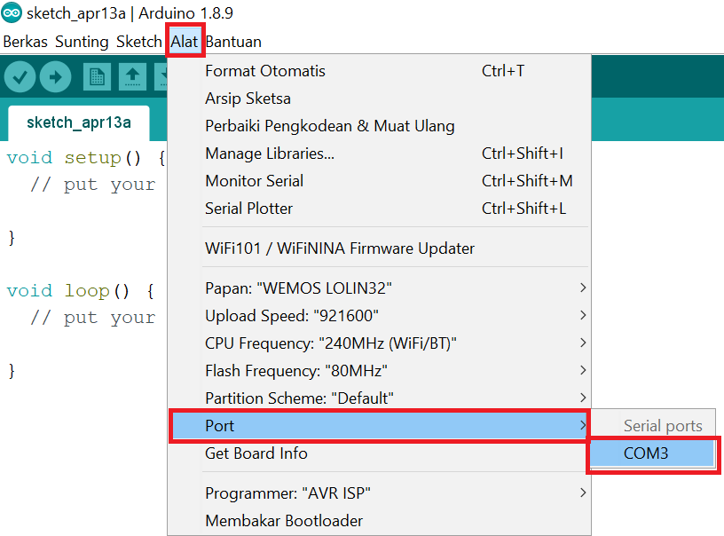
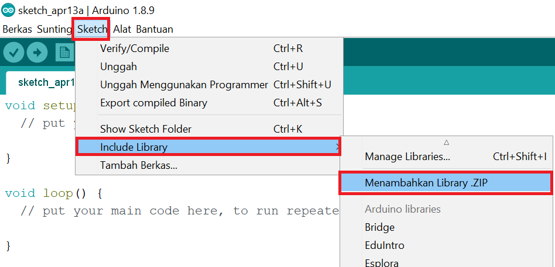

Pendahuluan
Dokumetasi ini akan menjelaskan proses instalasi board dan library yang digunakan pada dokumentasi Antares ke Arduino IDE. Sebelumnya pada komputer anda pastikan sudah terinstall software Arduino IDE yang akan digunakan untuk memprogram board. Jika anda belum, anda dapat mengunduh pada link berikut dan untuk tutorial instalasi Arduino IDE dapat mengikuti halaman berikut.
Instalasi Board ESP32 Pada Arduino IDE
Pada tutorial ini akan dijelaskan instalasi board ESP32 yang digunakan pada tutorial ESP32 (WiFi) dan ESP32 (LoRa)

Gambar 1. Pilih File->Preferences
Gambar 2. Menambahkan URL board tambahan
Buka Arduino IDE, pilih Files -> Preferences kemudian masukkan URL berikut ke dalam kotak Additional Board Manager URLs kemudian klik OK.
https://dl.espressif.com/dl/package_esp32_index.jsonCATATAN: Anda dapat menambahkan beberapa URL dengan menambahkan koma untuk memisahkannya jika diperlukan.
Gambar 3. Pilih Alat->Papan->Boards Manager
Gambar 4. Proses Instalasi board ESP32 pada Arduino IDE
Setelah menambahkan URL, langkah selanjutnya adalah instalasi board kita kedalam Arduino IDE. Pilih Alat->Papan->Boards Manager, kemudian anda dapat memasukkan kata kunci "esp32" pada kotak pencarian untuk memudahkan anda. Jika sudah menemukan esp32 by Espressif System, anda dapat memilih versi paling terbaru dan kemudian klik Install.
Gambar 5a. Pilih Alat->Papan->WEMOS LOLIN32 untuk ESP32 Wi-Fi
Gambar 5b. Pilih Alat->Papan->ESP32 Dev Module untuk ESP32 LoRa
Untuk tutorial ESP32 (WiFi), anda dapat memilih board WEMOS LOLIN32 seperti pada Gambar 5a. Sedangkan pada Tutorial ESP32 LoRa anda dapat memilih board ESP32 Dev Module seperti pada Gambar 5b.

Gambar 6. Memilih Port
Sebagai tambahan, agar dapat melakukan komunikasi dengan board, Anda perlu untuk memilih port com. Pilih Alat > Port > Pilih port sesuai dengan device yang Anda miliki.
Instalasi Board ESP8266 Pada Arduino IDE
Pada tutorial ini akan dijelaskan instalasi board ESP8266 yang digunakan pada Tutorial ESP8266.
Gambar 1. Pilih File->Preferences

Gambar 2. Menambahkan URL board tambahan
Buka Arduino IDE, pilih Files -> Preferences kemudian masukkan URL berikut ke dalam kotak Additional Board Manager URLs kemudian klik OK.
http://arduino.esp8266.com/stable/package_esp8266com_index.jsonCATATAN: Anda dapat menambahkan beberapa URL dengan menambahkan koma untuk memisahkannya jika diperlukan.
Gambar 3. Pilih Alat->Papan->Boards Manager
Gambar 4. Proses Instalasi board ESP8266 pada Arduino IDE
Setelah menambahkan URL, langkah selanjutnya adalah instalasi board kita kedalam Arduino IDE. Pilih Alat->Papan->Boards Manager, kemudian anda dapat memasukkan kata kunci "esp8266" pada kotak pencarian untuk memudahkan anda. Jika sudah menemukan esp8266 by ESP8266 Community, anda dapat memilih versi paling terbaru dan kemudian klik Install.

Gambar 5. Pilih Alat->Papan->LOLIN(WEMOS) D1 R2 & mini.
Sesuai dengan board yang digunakan pada Tutorial ESP8266, maka anda dapat memilih LOLIN(WEMOS) D1 R2 & mini.
Gambar 6. Memilih Port
Sebagai tambahan, agar dapat melakukan komunikasi dengan board, Anda perlu untuk memilih port com. Pilih Alat > Port > Pilih port sesuai dengan device yang Anda miliki.
Instalasi Library Antares Pada Arduino IDE
Agar perangkat yang anda program dapat berinteraksi dengan platform Antares, maka diperlukan instalasi library tambahan pada Arduino IDE di komputer anda. Pada bagian ini akan dijelaskan proses instalasi library Antares HTTP ESP32 pada Arduino IDE. Untuk instalasi library menggunakan mikrokontroler atau protokol yang berbeda dapat menyesuaikan dengan tutorial berikut.
Gambar 1. Halaman GitHub untuk mengunduh Library
Sebelumnya pastikan anda telah memiliki file Library Antares pada komputer anda. jika belum anda dapat mengunduh pada link yang sudah di sediakan pada masing-masing tutorial. Pilih clone or download -> Download ZIP kemudian pilih direcory untuk menyimpan file .zip Library Antares.

Gambar 2. Include .ZIP
Gambar 3. Pilih file dapa direktori tampat anda mengunduh
Setelah menguduh Library Antares pada halaman GitHub, anda dapat menambahkan Library tersebut kedalam Arduino IDE dengan cara pilih Sketch -> Include Library -> Menambahkan Library .ZIP, Kemudian pilih file .zip di direktori anda mengunduh library tersebut.
Gambar 4. Memasukkan Library kedalam program
Setelah Library sudah terpasang pada Arduino IDE maka anda dapat memasukkan Library tersebut kedalam program yang anda buat dengan cara Pilih Sketch -> Include Library -> Antares ESP32 HTTP (Sesuaikan dengan Library yang anda butuhkan).